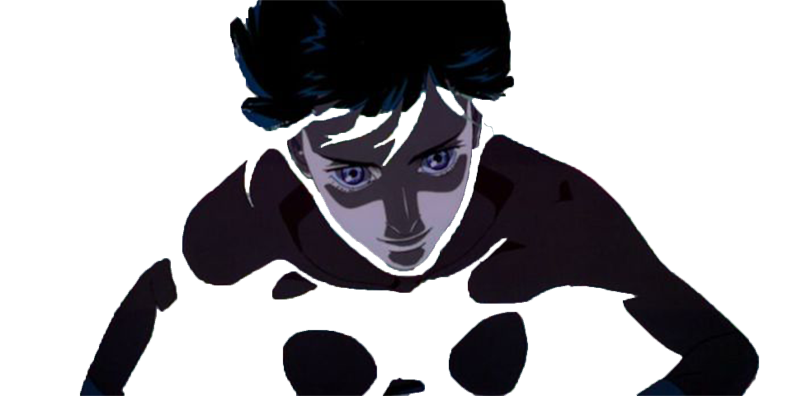

Cyberpunk is a subgenre of science fiction in a dystopian futuristic setting that tends to focus on a "combination of lowlife and high tech" featuring advanced technological and scientific achievements, such as artificial intelligence and cybernetics, juxtaposed with a degree of breakdown or radical change in the social order. Various forms of media have been exploring this concept, including literature, film, video game and comics. This slider will lead you through its anime adaptation and development.
AKIRA

The Japanese cyberpunk subgenre began in 1982 with the debut of Katsuhiro Otomo's manga series Akira. The story is set in a post-apocalyptic and futuristic "Neo-Tokyo", more than two decades after a mysterious explosion destroyed the city. Otomo uses conventions of the cyberpunk genre to detail a saga of political turmoil, social isolation, corruption, and power. Akira has influenced numerous works in animation, comics, film, music, television and video games.
GHOST IN THE SHELL
Ghost in the Shell is a neo-noir cyberpunk thriller film based on the manga of the same name. The film is set in 2029 Japan, and follows a cyborg public-security agent who hunts a mysterious hacker. The narrative incorporates philosophical themes that focus on self-identity in a technologically advanced world. The Matrix series took several concepts from the film, including the Matrix digital rain and the way characters access the Matrix through holes in the back of their necks.
Cowboy Bebop
Cyberpunk in Anime is seen as a subgenre of Japanese cyberpunk. In contrast to Western cyberpunk which has roots in New Wave science fiction literature, Japanese cyberpunk has roots in underground music culture. In Japan, where cosplay is popular and not only teenagers display such fashion styles, cyberpunk has been accepted and its influence is widespread. Cyberpunk anime and manga draw upon a futuristic vision which has elements in common with Western science fiction and therefore have received wide international acceptance outside Japan.
Development
Cyberpunk in Anime is seen as a subgenre of Japanese cyberpunk. In contrast to Western cyberpunk which has roots in New Wave science fiction literature, Japanese cyberpunk has roots in underground music culture. In Japan, where cosplay is popular and not only teenagers display such fashion styles, cyberpunk has been accepted and its influence is widespread. Cyberpunk anime and manga draw upon a futuristic vision which has elements in common with Western science fiction and therefore have received wide international acceptance outside Japan.